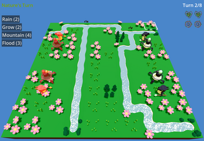

Nature's Turn

Nature's Turn is our entry to the GMTK Game Jam 2023 with the theme "Reversed Roles". The concept of the game is that you are playing as the environment in a turn based tactics game instead of the units. Your goal is to keep peace and prevent forests from destruction. The game was made over a weekend so we ended up not being able to implement all the features we wanted to. You can check the game out here!
Technology: Godot